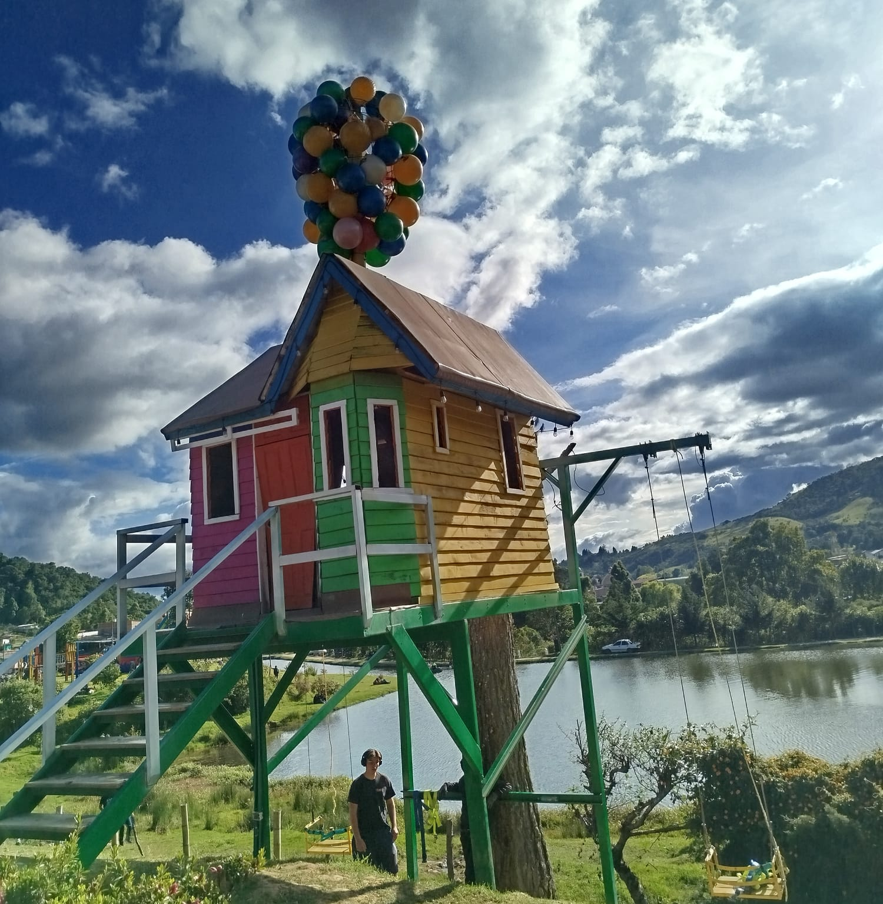

Viajar no es solo cambiar de lugar, es cambiar de perspectiva. Es abrir el corazón a nuevas culturas, sabores, paisajes y personas que transforman nuestra forma de ver el mundo. Cada destino tiene una historia que contar y cada viaje deja una huella imborrable en el alma. Este blog nace para inspirarte a dar ese primer paso, a perder el miedo y encontrar la magia en cada rincón del planeta. Porque viajar no es un lujo, es una inversión en recuerdos, experiencias y crecimiento personal.
En este blog encontrarás información sobre algunos de los destinos turísticos más famosos del mundo y datos curiosos sobre cada lugar
